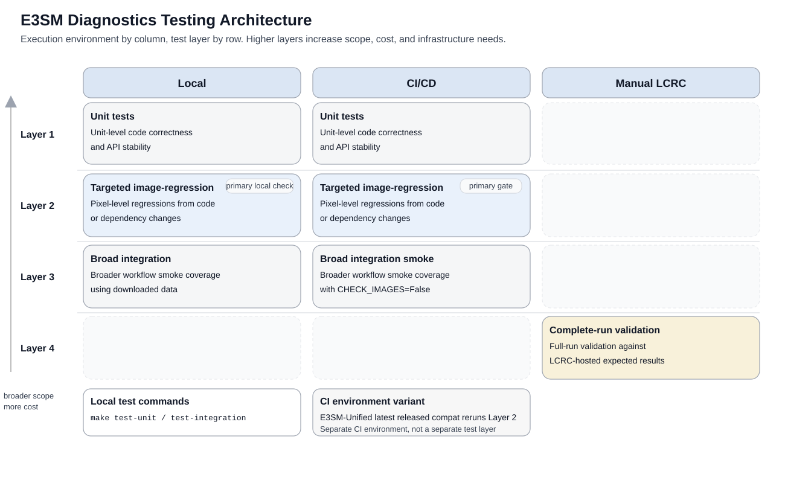

Testing E3SM Diagnostics
Testing at a Glance
E3SM Diagnostics uses four test layers across local, CI/CD, and LCRC environments. The diagram below shows how they fit together.

Recommended Contributor Workflow
For most changes, use this order:
Run Layer 1 unit tests during normal local development.
Run Layer 2 targeted image-regression tests locally for changes that may affect plots or rendered output.
Run the default local check when you want the standard repository checks in one command.
CI/CD runs Layers 1 to 3 automatically on pull requests and on
mainas the enforcement backstop.Run Layer 4 manually only when full LCRC validation is needed.
Local Workflows
Default Local Check
To run the repository’s default automated local checks in one command:
./tests/test.sh
For Layer 3, ./tests/test.sh first looks for a local downloaded-data tree
at /e3sm_diags_downloaded_data. If it is not present, the helper pulls the
same OCI test-data image used by GitHub Actions and copies
tests/integration/integration_test_data from that image into the working
tree. If you need a nonstandard setup, use --source-root or --image
with tests.integration.download_data directly.
Layer 1: Unit Tests
Covers: unit-level code correctness and API stability.
When to run: first during local development.
Run:
pytest tests/e3sm_diags
Layer 2: Targeted Image-Regression Tests
Covers: pixel-level regressions from code or dependency changes using targeted synthetic cases with committed baselines.
When to run: after Layer 1, especially for changes that may affect plotting or rendered output.
Run:
pytest tests/integration/test_plot_image_regressions.py -m image_regression
How it works:
This suite compares generated PNGs against committed baselines in
tests/integration/baselines/ and writes dependency metadata for provenance.
It currently covers targeted synthetic regressions for lat_lon, polar,
zonal_mean_2d, and cosp_histogram.
If a test fails:
Rerun with a persistent artifact directory:
IMAGE_REGRESSION_ARTIFACT_DIR=tests/integration/image_check_failures \
pytest tests/integration/test_plot_image_regressions.py -m image_regression
Inspect tests/integration/image_check_failures to determine whether the
change is expected. Each failed image artifact directory includes the generated
runtime_metadata.json and a dependency_diff.json comparing the runtime
environment to the committed baseline_metadata.json.
Note
In GitHub Actions, build artifacts for failed image-regression tests are saved and can be downloaded from the bottom of the workflow run summary page.
How to update baselines:
If a targeted image change is intentional:
Option 1: Run the manual Update Image Baselines GitHub Actions workflow.
This refreshes the committed Layer 2 baselines on main using the same
conda-env/ci.yml and Python 3.13 authority as the main visual-regression
gate. After that workflow finishes successfully, branches still failing only on
targeted image-regression mismatches should rebase onto the updated main so
they pick up the new committed baselines and rerun CI against them.
Option 2: Refresh baselines locally with terminal commands:
conda env create -f conda-env/ci.yml
conda activate e3sm_diags_ci
python -m tests.integration.refresh_plot_image_baselines
pytest tests/integration/test_plot_image_regressions.py -m image_regression
The refresh command regenerates all targeted Layer 2 baselines by default. To refresh only one targeted case:
python -m tests.integration.refresh_plot_image_baselines --case polar
Use the same conda-env/ci.yml environment and Python 3.13 authority as the
main GitHub Actions visual-regression gate when refreshing committed baselines.
That keeps committed baseline_metadata.json aligned with the environment
used to validate Layer 2 on main. Commit the updated PNGs and
baseline_metadata.json.
Layer 3: Broad Downloaded-Data Integration Tests
Covers: broader workflow smoke coverage using downloaded data to ensure diagnostic workflows complete and generate outputs, without pixel-level image matching.
When to run: when you want wider integration coverage than Layers 1 and 2, but do not need exact image comparisons.
Run:
python -m tests.integration.download_data --data-only
CHECK_IMAGES=False pytest tests/integration -m 'not image_regression'
How it works:
These tests exercise broader diagnostics workflows with downloaded test data.
They run with CHECK_IMAGES=False, so they are intended to catch integration
and workflow regressions rather than serve as the visual regression authority.
By default, tests.integration.download_data uses the local
/e3sm_diags_downloaded_data tree when it exists. Otherwise it pulls the
same OCI image used by CI and copies the requested test-data directory from
/e3sm_diags_downloaded_data inside that image using crane export. For
nonstandard setups, use the --source-root or --image command-line
options.
Role relative to Layer 2:
Layer 2 is the primary image-regression gate. Layer 3 provides wider smoke coverage.
CI/CD Workflows
Main GitHub Actions Workflow
The main GitHub Actions CI/CD workflow runs on pull requests and on main.
It runs:
Layer 1 unit tests
Layer 2 targeted image-regression tests
Layer 3 broad integration smoke tests with
CHECK_IMAGES=False
CI/CD is the enforcement backstop. Contributors should still run relevant local checks before opening a pull request.
Within CI, Layer 2 is the primary visual regression gate. Layer 3 provides wider smoke coverage, but is not the image-matching authority.
Manual Baseline Refresh Workflow
GitHub Actions also provides a manual Update Image Baselines workflow.
Purpose:
This workflow refreshes the committed Layer 2 baselines directly on main
using the same conda-env/ci.yml and Python 3.13 environment used by the
main CI visual-regression gate. It exists to avoid opening a baseline-only
pull request when dependency updates legitimately change targeted plots.
What it runs:
Regenerates all committed Layer 2 baselines with
python -m tests.integration.refresh_plot_image_baselinesReruns
pytest tests/integration/test_plot_image_regressions.py -m image_regressionPushes the result to
mainonly if the diff is limited totests/integration/baselines/
When to use it:
Use this workflow only for intentional baseline refreshes. Normal code changes should still go through the standard pull request path.
Note
If the workflow fails during verification, it uploads the same image regression artifacts used for CI failure triage, including runtime metadata and dependency diffs when available.
E3SM-Unified Advisory Compatibility Workflow
GitHub Actions also provides a separate manual E3SM Unified Latest Release
Advisory Compatibility workflow.
Purpose:
This workflow reruns Layer 2 against the latest released linux-64
nompi e3sm-unified package on conda-forge. It is an advisory
production-compatibility check, not the authoritative Layer 2
visual-regression gate.
What it runs:
It derives an environment from the latest released E3SM-Unified package and
compares current Layer 2 outputs against baselines generated in the main CI
authority environment. Because those environments can differ, dependency-driven
rendering drift, such as Matplotlib version differences, can produce image
mismatches even when e3sm_diags code has not regressed.
When to use it:
Run it manually when you want to inspect released-environment drift without
adding another status check to pull requests or the default main CI path.
Note
Implementation details: this workflow starts from conda-env/ci.yml, resolves
the latest released e3sm-unified package metadata from
conda-forge/linux-64/repodata.json.bz2, substitutes the released package
dependency set into the CI environment, caches conda packages with the
generated environment hash, and then runs Layer 2.
This workflow uses the same targeted image baselines as the main Layer 2 suite.
Treat failures as a signal to inspect the uploaded artifacts for
released-environment drift before concluding that a code change regressed plot
behavior. Baseline refresh decisions remain governed by the main Layer 2
authority environment on main.
Manual LCRC Validation
Layer 4: Complete-Run Validation
Covers: full-run validation of all diagnostics against LCRC-hosted expected results.
When to run: when complete-run validation is needed on LCRC-hosted data and an E3SM-Unified environment on Anvil or Chrysalis.
Run:
tests/integration/complete_run.py is separate from CI/CD.
It compares images generated by a full diagnostics run against LCRC-hosted expected results. This test is manual because it depends on the LCRC data installation and an E3SM-Unified environment on Anvil or Chrysalis.
Warning
You must run this test manually. It is not part of the CI/CD workflow.
On Anvil or Chrysalis:
git fetch <fork-name> <branch-name>
git checkout -b run-lcrc-test <repo-name>/<branch-name>
source /lcrc/soft/climate/e3sm-unified/load_latest_e3sm_unified_chrysalis.sh
# or:
source /lcrc/soft/climate/e3sm-unified/load_latest_e3sm_unified_anvil.sh
pip install .
pytest tests/integration/complete_run.py
If the test fails:
Inspect the reported image differences and determine whether the change is intentional.
Updating Expected Results on LCRC
If a complete-run image change is intentional:
cd /lcrc/group/e3sm/public_html/e3sm_diags_test_data/unit_test_complete_run/expected
cat README.md
mv all_sets previous_output/all_sets_<version>_<date>_<hash>
mv image_list_all_sets.txt previous_output/image_list_all_sets_<version>_<date>_<hash>.txt
mv <version>_all_sets/ /lcrc/group/e3sm/public_html/e3sm_diags_test_data/unit_test_complete_run/expected/all_sets
cd /lcrc/group/e3sm/public_html/e3sm_diags_test_data/unit_test_complete_run/expected/all_sets
find . -type f -name '*.png' > ../image_list_all_sets.txt
cd ..
After the pull request is merged, update the LCRC README.md metadata to
match the E3SM Diags version, date, and git commit used to generate the new
expected images.